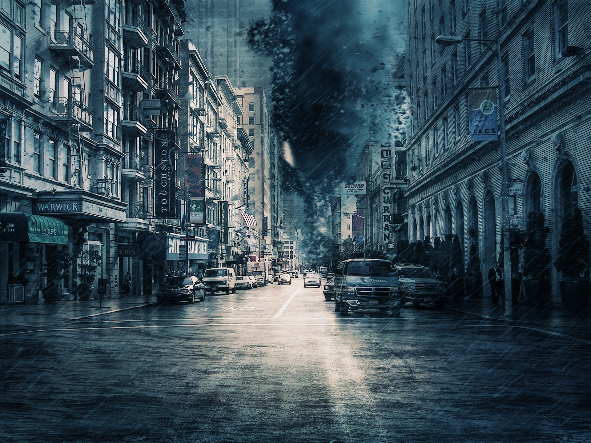

Conseils photo

30 oct 2022
- Où commencer
Du modeste point de vue de mon expérience personnelle, pour bien démarrer en photo, il s’agit tout d’abord de respecter certaines règles et disons, exercices. Tout du moins, cet article tentera d’établir une liste non-exhaustive de bons conseils de départ… et pour tout le temps !